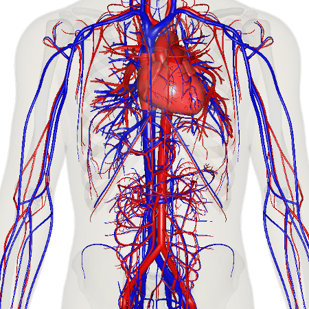

El sistema cardiopulmonar: El sistema cardiovascular
1º CFGS en Emergencias Sanitarias
|
|
Atención Sanitaria Inicial en Situaciones de Emergencias |
|
Contenidos
|
|
El sistema cardiopulmonar:El aparato circulatorio
|
|

Recurso Educativo Abierto Creado a partir del
Recurso Educativo Abierto del IEDA
El sistema cardiopulmonar: El sistema cardiovascular
Anatomía Aplicada. 1º de Bachillerato.
Autor: Antonio Vázquez Pérez
La gran mayoría de las células de nuestro organismo están muy alejadas de las fuentes de nutrientes y también de las células con las que han de relacionarse.
Para poder realizar estas dos funciones vitales y otras acciones, el medio interno del cuerpo humano utiliza la sangre, como medio móvil que fluye por todo el organismo gracias al sistema cardiovascular.
|  |
| Imagen de Anatomography en Wikimedia Commons bajo licencia CC |